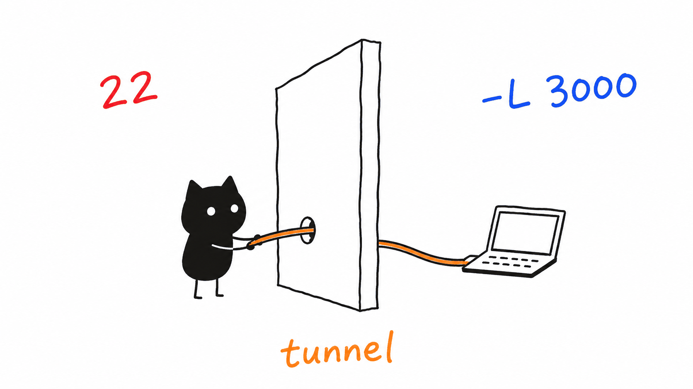

Connecting
SSH, keys, ports, port-forwarding, editors and Cloudflare Tunnel access.

Everything enters through SSH on one published port. Nothing else in the sandbox is exposed to the host unless you forward it.
Where to connect
| Mode | Container | Host port | Command |
|---|---|---|---|
| Dual (1st) | ghost-machine1 |
2223 | ssh -p 2223 developer@localhost |
| Dual (2nd) | ghost-machine2 |
2224 | ssh -p 2224 developer@localhost |
| Single | ghost-machine-single |
2223 | ssh -p 2223 developer@localhost |
| Power | ghost-machine-power |
2223 | ssh -p 2223 developer@localhost |
| Half | ghost-machine-half |
2223 | ssh -p 2223 developer@localhost |
./start.sh status # prints the container, image and a ready-made ssh line
Custom base port: ./start.sh -p 2225 moves the first machine to 2225 and, in dual mode, the second to 2226.
Credentials
| Account | Password | Notes |
|---|---|---|
developer |
ghost |
Default login, has sudo (same password). |
root |
ghost |
ssh -p 2223 root@localhost. |
Dev defaults — read Security before exposing a sandbox to anyone.
Key authentication is automatic. If ~/.ssh/id_ed25519.pub, ~/.ssh/id_rsa.pub or ~/.ssh/authorized_keys exists on the host, start.sh mounts it read-only and the entrypoint installs it with 0700/0600 permissions. Explicit path: SSH_AUTH_KEY_PATH=/path/key.pub in .env.
Disabling passwords is a one-way door until you recreate the container:
# .env
SSH_PASSWORD_AUTH=false
Make sure a key works first, then ./start.sh stop && ./start.sh …. Recovery if you lock yourself out: connect through docker exec -it <container> bash, set SSH_PASSWORD_AUTH=true, and recreate.
Host key warnings after a rebuild
Every new container generates a new SSH host key, so the first connection after stop/--build/--pull prints Host key verification failed or a scary fingerprint change. Correct behaviour, not an attack:
ssh-keygen -R "[localhost]:2223"
or use the helper that skips the check:
source aliases.sh
ghost-ssh single # developer@localhost on G1_PORT
ghost-ssh 2 # second machine, G2_PORT
Without SSH
docker exec -it ghost-machine-single bash
docker exec -it ghost-machine-single sudo -u developer -i # as the workspace user
Useful when sshd is broken, during first boot, or from a CI job.
Reaching services inside the sandbox
Only port 22 is published. Rather than editing compose for every dev server, tunnel:
# inside: vite --port 3000 / uvicorn --port 8000 / jupyter --port 8888
ssh -p 2223 -L 3000:localhost:3000 developer@localhost
# now http://localhost:3000 on your host
# several at once
ssh -p 2223 -L 3000:localhost:3000 -L 8888:localhost:8888 developer@localhost
Long-running tunnels are ordinary SSH sessions — add -N -f to background them. If you genuinely need a published port, add it to docker-compose.yml under ports: and recreate.
Editors
Any SSH-aware tool works; point it at the same host/port/user:
- VS Code — Remote-SSH → Connect to Host →
ssh -p 2223 developer@localhost - JetBrains Gateway / CLion remote — new SSH connection, same triple
- Zed remote,
scp -P 2223,sftp -P 2223,rsync -e "ssh -p 2223"
Because the home directory is a bind mount, files you edit over SSH are also visible in mounts/ on the host — a host-side editor works too.
Remote access over the internet (Cloudflare Tunnel)
# .env
TUNNEL_TOKEN=eyJ...
./start.sh --prebuilt ubuntu -m single
Valid tokens switch on the remote compose profile and run cloudflared. In the Cloudflare dashboard, map a public hostname to the sandbox SSH service (ssh://ghost1:22), gate it with an Access policy, then from your laptop:
cloudflared access ssh --hostname ghost.example.com
Persist it in ~/.ssh/config:
Host ghost
HostName ghost.example.com
ProxyCommand cloudflared access ssh --hostname %h
User developer
No router port-forwarding, no public IP. Note that with a tunnel the host↔container port mapping is irrelevant; access control lives in Cloudflare.
Multiple people, one host
Do not share the default sandbox between users — use tenants, which get their own port, quota, workspace and container:
./tenant.sh add alice --engine debian --prebuilt
See Multi-Tenant.